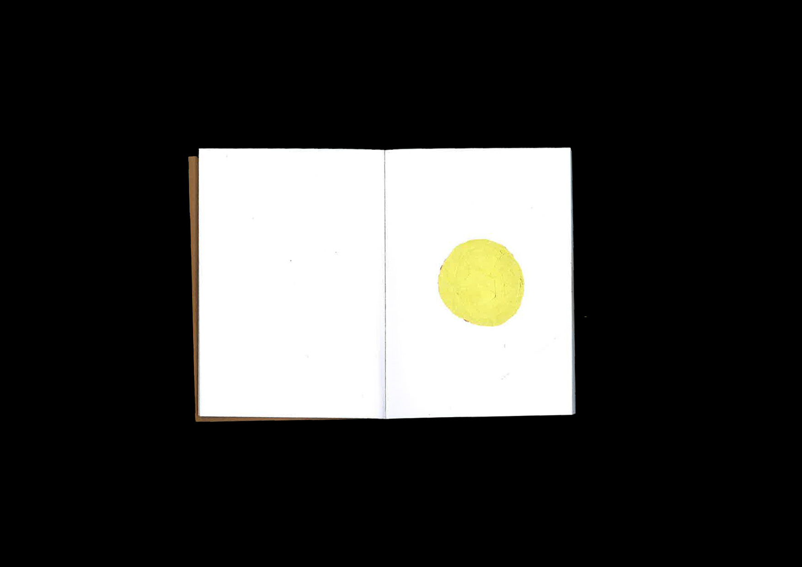
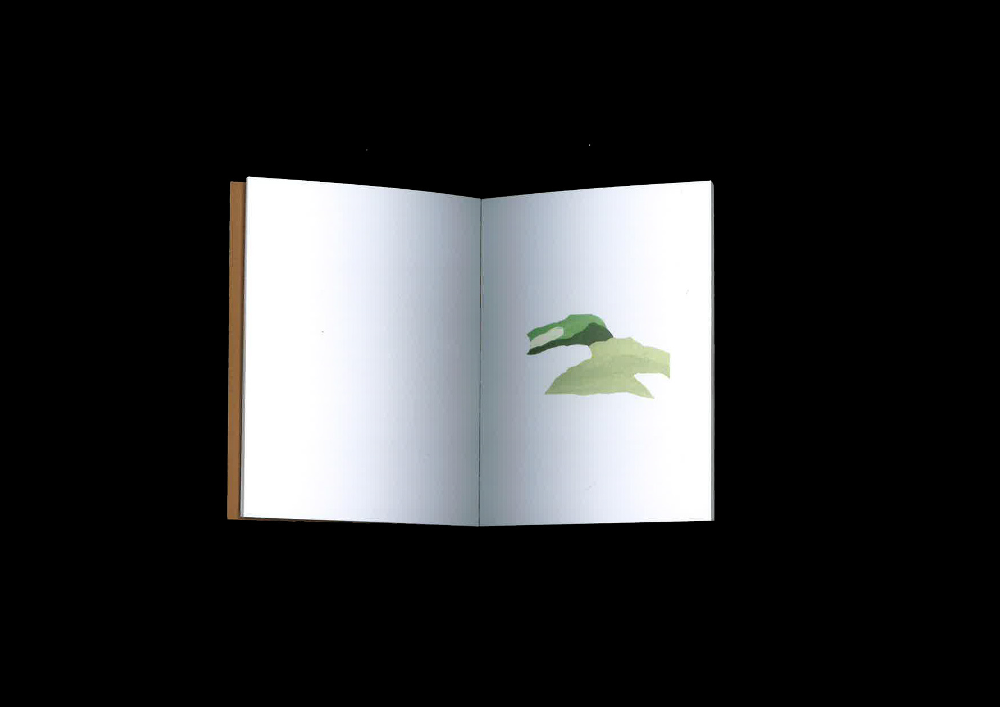
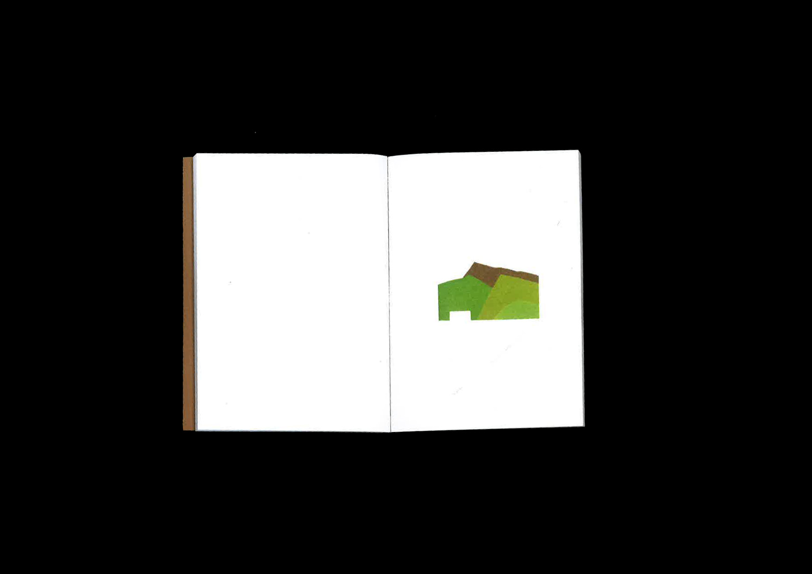
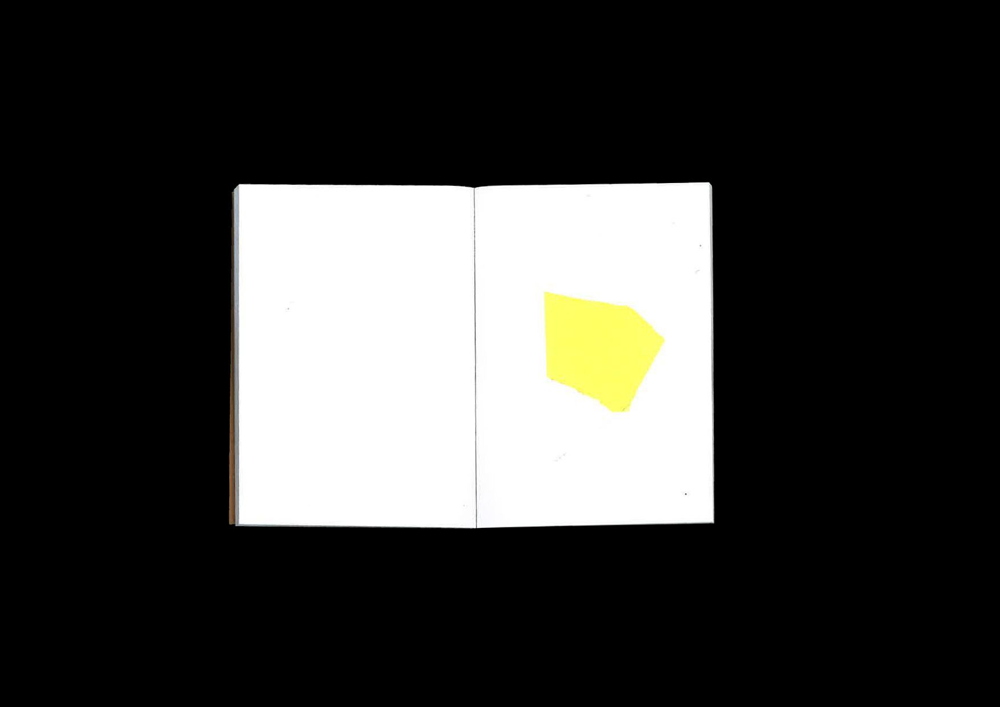
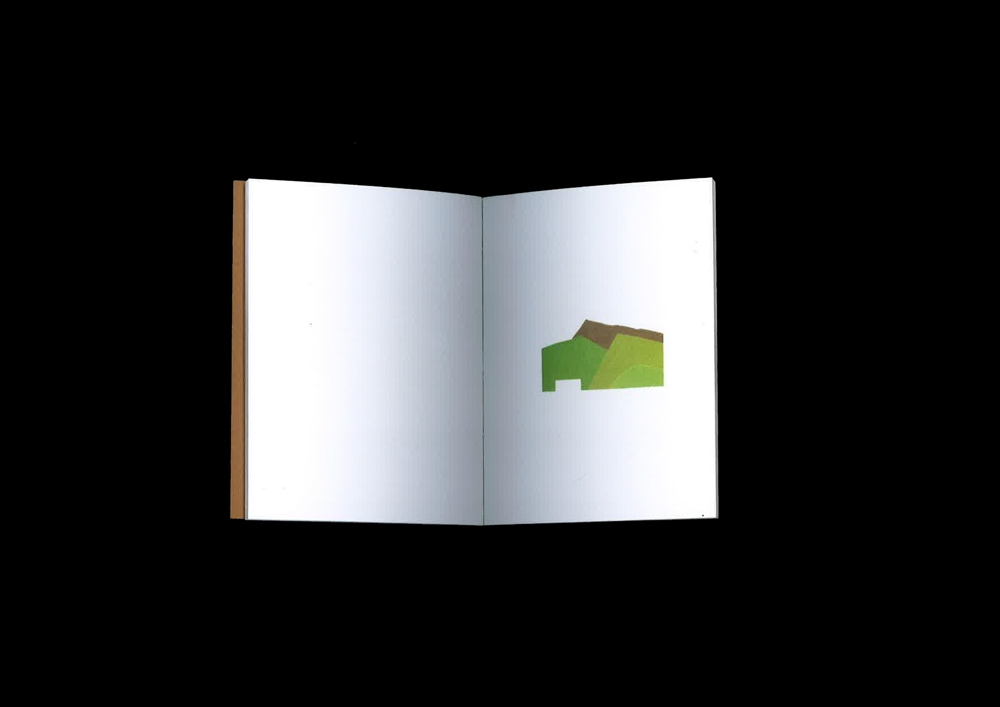

Édition
7,4 x 10,5 cm
23 pages
Mais l'Intelligence Artificielle n'apportait pas le résultat tant recherché : donner une conscience aux ordinateurs. Alors l'homme oublia l'Intelligence Artificielle, et comme pour se prouver qu'il était bien le seul à avoir une conscience, se mit aux Arts. Les belles promesses sur l'intelligence des ordinateurs et des robots étaient oubliées. Le "complexe de Frankenstein" avec. De nouveaux ordinateurs plus puissants, mais dépourvus d'intelligence, virent le jour. C'était en 2004, un an après l'ouverture au grand public d'Internet 3.




